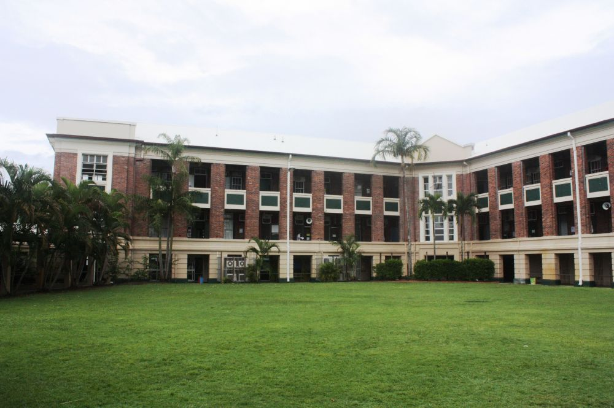

I am trying to get into Poly since PACE does seem like a very good program and I have heard a lot of good things about it. I do have other choices such as Milikan and CAMS, so I’m still on the fence on where I want to go next year.
I don’t currently have any plan about which college I want to go to since I don’t think ahead that far, but I do want to go to college after high school.
Some careers I would want to pursue are as an engineer, a coder, a doctor, maybe a writer for a TV show, and and possibly even something regarding sound design. I still haven't thought that far ahead, so these are just aspirations at this point.
Some goals I have in life is to make an impact on people in the world. I want to be able to do something to make a difference that can be recognized by others. I don’t have an idea of what kind of career I truly want, as I’m simply brainstorming. My goal is to graduate with a degree in whatever I will be passionate about, and to enjoy my life to the fullest.